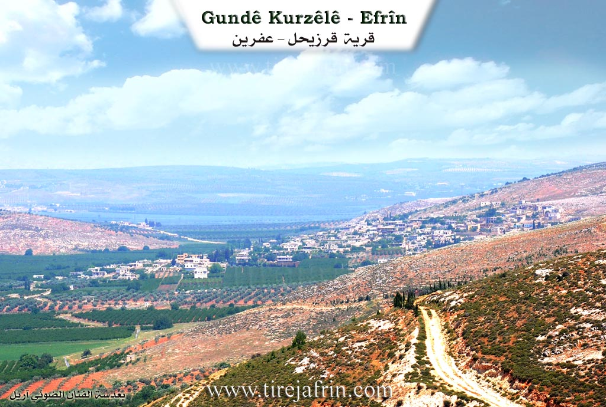
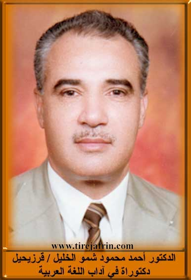
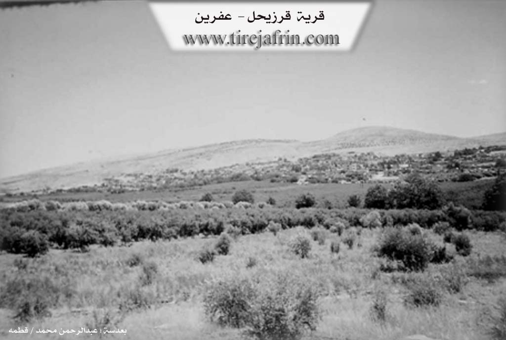

General Information
Nahiya (Subdistrict)
Efrîn
Also Known As
Karzêlê, Kurzêlê, Kurzêlê Cûmê, قرزيحل, كوزريله جيا, كورزيله جومه
Families, Clans, etc.
Bilolî, Boryû, Bêrem, Bîlalî, Cimoê Kalo, Ebdo, Ebdulrehman, Elo, Elî Hemo, Ewlî, Feyo, Fiyo / Kersane, Hemekero, Hemkro, Hemo, Kalo, Kelbcek, Kelebcek, Kelêpçek, Malê Bilolê, Malê Ebdî Hesen, Malê Ebdî Sebrî, Malê Ebû Mehmûd Feqêra, Malê Ehmedê Necêr, Malê Elî, Malê Elî Genim, Malê Evdo Maliqîdî, Malê Hecî Ibrêm, Malê Hecî Nesîba, Malê Hemekerê, Malê Henanê Fatê, Malê Henîn Hec 'Ewaş, Malê Hesenê Mextêr, Malê Kelêvçak, Malê Klepçeko, Malê Mehmûdê Xwacê, Malê Şêx Nasir, Malê Şêxmî, Malê Şîfê, Malî Şêx Avdo, Nasir / Şamyû, Necar, Osman, Phorî, Setof, Seydo Qeydî, Xelik, Xoce, Îbo (Bilalî), Ûlê, Şamî, Şêmî
Photos





Basic Information about Kurzêlê
Source: Afrin 366
Etymology: Associated with a historical church and water sources according to local oral history
Foundation Date/Period: 300 to 400 years ago
Number of Caves: 2
Springs: kaniya cîçikê
Hills: Kunder
Shrines: Zîkretê mêra, Gundi Mêra
Ruins: kilîse
Other Landmarks: Gelî Lûlik, Wodî Lûlik
Source: Khalil Sino
Springs: Kaniya Romê
Hills: Çiyayê Lêlûn
Other Landmarks: Basûtê, Efrîn
Summaries
I. Summary from TirejAfrin Site (English) of Kurzêlê
Source: https://www.tirejafrin.com/site/kura%20afrin%20markaz-%20kurzele.htm
It was stated in the book جبل الكرد (عفرين) دراسة جغرافية Çiyayê Kurmênc (Efrîn): A Geographical Study by د. محمد عبدو علي Dr. Mihemed Ebdo Elî:
Kurzl Cm (likely Cûme region), Qerzîhêl /3611 inhabitants - 485 houses - 7km distance - 360m altitude/:
There are two opinions regarding the origin of the name. The first says it is Syriac, meaning "the sliding village."
The second, according to Khuri Barsoum, is that it is Aramaic, composed of two terms: "qur," which primarily means coldness and refers to the spring water found there, and "zahil," from zahal, meaning flowing or crawling. Thus, this construction signifies "the flowing spring." A clear difference is noted between the two opinions as they rely solely on the phonetic form, which weakens both. As for us, we did not reach a conclusion regarding the origin of the name and its meaning in the Kurdish language, although the first syllable of it, "kur," means "barren, boy, or son."
It is one of the large villages in the Efrîn region. It was mentioned by Yaqut al-Hamawi (died 1229 AD), who wrote it as Qerzahil. It is located at the end of the western slope of Çiyayê Lêlûn. It contains remains of church walls, tombs, wells dug into the rock, huge limestone blocks, columns, and lintels scattered within and around the village. These are believed to date back to the Roman and Byzantine eras. Its inhabitants are among the most enduring in work. There used to be an important spring of water next to the cemetery and the shrine, but it has dried up in recent years. Kurzl was one of the prosperous villages in the early Roman and then Byzantine eras, serving as a monastic center, containing khans, hotels, a monastery for monks, and a column for worship.
It was stated in the book عفرين .... نهرها وروابيها الخضراء Efrîn... Her River and Her Green Hills by the writer عبدالرحمن محمد Ebdulrehman Mihemed from the village of Qetme:
Qerzîhêl: A village in the Cûme plain and Efrîn valley, administratively belonging to the Central Villages sub-district of the Efrîn area, Heleb governorate. It is large, located to the east of a deep valley between two grooved limestone mountains: Çiyayê Lêlûn to its east and another to its west. It is located to the southeast of the city of Efrîn. To its south extends an alluvial plain. Its ancient buildings are indicated by the remains of church walls, tombs, wells carved into the rock, huge limestone stones, columns, and lintels scattered within and around the village. These date back to the Roman and Byzantine eras.
The number of its houses reaches about 600, and its age is about 700 years. It is bordered to the north by a valley and the villages of Tûrende and Erşqîbar; to the south by a wide and fertile plain planted with pomegranate and apple trees and vegetables, and the tourist town of Basûtê; to the west by a mountainous rise and a wide plain planted with pomegranate trees, and the village and spring of Eyn Dara; and to the east by the mountain range of Çiyayê Lêlûn and Çiyayê Siman and the villages of Dêr Mişmiş, Xaldiye, and Zerîqat.
An electricity network is available, as well as drinking water from artesian wells, and the asphalt Riya Efrîn-Qerzîhêl (Efrîn-Qerzîhêl road) reaches the center of the village. It has two schools (primary and preparatory), a modern municipality, a telephone center, and a mosque. The village is surrounded on three sides by orchards planted with pomegranate, apple, cotton, and other trees. The current houses of the village are modern, built of stone and cement, and are distributed in an organized manner. Each one contains a garden planted with pomegranate, apple, peach, and Menka trees. Its lands are fertile due to their proximity to the Efrîn river and the Eyn Dara spring. The residents drink from the public network with water coming from the Eyn Dara spring located to the southwest of the village. It is currently considered one of the fertile and populated villages due to the abundance of orchards and the workforce within it.
Among the families present in the village:
Al Nasir / Şamyû
Al Kelbcek + Ebdo
Al Hemkro
Al Îbo (Bilalî)
Al Bêrem (of Zoroastrian origins)
Al Xoce and Osman (from Cizîre)
Al Boryû (came from Eqîbe - Soxane - Kîmar)
Al Ewlî + Hemo (came from Dêr Mişmiş)
Al Fiyo / Kersane
Al Ebdulrehman (Kefer Sexîr)
Al Kalo (Kîmar)
Al Necar (Ebîn)
The Mukhtar of the village is the son of the previous Mukhtar from the Osman family (Fewzî Hesen Osman).
The highest scientific and cultural degrees obtained by the sons of the village:
Dr. Ehmed Mehmûd El-Xelîl (PhD in Arabic Literature, residing and teaching in universities in the United Arab Emirates).
Cîhad Îbo (PhD in Agricultural Engineering).
In addition to many university degree holders.
Mr. Yûsif Ebdulrehman Ebû Hebîb, who is now the muezzin and preacher of the village mosque, and Remzî Kenco Ebû Ziyad are considered among the beloved social figures among the people of the village for their humility and simplicity. Also, Mr. Mihemed Ebdo / Ebû Rêzan is considered the first to practice the profession of beekeeping in the village.
Preparation and Execution:
Manager of the Tirej Efrîn website: Ebdulrehman Hacî Osman
20/12/2013
Sources:
- Book: جبل الكرد (عفرين) دراسة جغرافية Çiyayê Kurmênc (Efrîn): A Geographical Study by د. محمد عبدو علي Dr. Mihemed Ebdo Elî.
- Book: عفرين .... نهرها وروابيها الخضراء Efrîn... Her River and Her Green Hills by عبدالرحمن محمد Ebdulrehman Mihemed from the village of Qetme.
II. Summary of Kurzêlê from Afrin 366
Source: https://www.youtube.com/watch?v=ueAFGVFw3hU
The documentary focuses on the village of Kerzêlê (also referred to as Qerzêlê or Kurzêl), located in the Efrîn region. The filming takes place during a particularly cold winter, with snow still visible on the ground and rooftops, a rare sight that the host and villagers discuss frequently. The village is described as large and historically significant, with a founding period estimated by a local elder to be approximately three to four hundred years ago.
According to oral history shared by the village elders, the first family to settle in Kerzêlê was Malê Şêxmî, who are considered the foundation of the village. Following them, other prominent families arrived, including Malê Klepçeko, Malê Hecî Ibrêm, Malê Hemekerê, and Malê Hecî Nesîba. One elder notes that in ancient times, the area contained a kilîse (church) and was abundant with water and mills, serving as a hub for washing and watering livestock. A specific valley area known as Gelî Lûlik (or Wodî Lûlik) is associated with Malê Hecî Nesîba and was once a rich water source, though the elders lament that the water levels have decreased over the last few years.
The social structure is defined by these large family houses with spacious courtyards, which the host admires repeatedly. Visits are paid to the homes of Malê Henîn Hec 'Ewaş and Malê Ebdî Sebrî, where the host is greeted with traditional hospitality. The villagers discuss the agricultural shifts in the region; Kerzêlê was once famous for its pomegranates (hanar), but an elder notes that they have largely been removed or replaced, and recent heavy snows have damaged many of the remaining trees and olive groves.
Spiritually, the village contains a site referred to as Zîkretê mêra or Cîhê mêra, indicating a shrine or place of saints that holds local significance. Residents also mention a location called Kunder regarding the view. Despite the harsh weather and agricultural challenges, the community emphasizes the importance of education for the younger generation, noting that the youth are now students and professionals rather than solely relying on the traditional agrarian lifestyle. The documentary captures a blend of nostalgia for the "oxler" (ancestors) who lived long, healthy lives on simple diets of oil and yogurt, contrasted with the modern reality of a connected, educated, but geographically dispersed population.
II. Summary of Kurzêlê from Khalil Sino
Source: https://www.youtube.com/watch?v=3kPo6iH7pDo
The village of Kurzêlê is situated within the Çiyayê Lêlûn region, located approximately four kilometers from the city of Efrîn and four kilometers from the village of Basûtê. The settlement has a deep history, suggested by the presence of Kaniya Romê, a spring described by elders as "Roman" and extremely old. While the exact foundation date is lost to time, the village historically coalesced from several distinct lineages or factions. The most prominent historical narrative involves the Malê Kelêvçak family, who are said to have migrated to the area from Xersanê. They are considered one of the foundational groups alongside Malê Bilolê and the ancient Malê Şîfê lineage.
The social structure of Kurzêlê is defined by these family lines rather than broad tribal confederations. Elders describe the village as being composed of six or seven distinct groups that intermarried and settled together. Notable families mentioned include Malê Ehmedê Necêr, Malê Evdo Maliqîdî, and Malê Mehmûdê Xwacê. The latter family, specifically the father of Hesenê Mextêr, was historically significant for owning and operating the village's traditional olive press. This press, which closed approximately fifty years ago, was a communal hub where animals were used to crush olives in a large stone basin. The village has maintained a strong Kurmanc identity; residents note a conscious effort to purchase available land to prevent it from being sold to outsiders, ensuring the demography remains cohesive.
Religious and educational life in Kurzêlê centers around specific local institutions. A mosque was established in the mid 20th century, with figures like Malê Ebdî Hesen, Malê Şêx Nasir, and Malê Henanê Fatê (also known as Ebû Reşîd) involved in its administration. Education has also been a priority, with a long standing school that expanded from a primary institution to include secondary education levels over the decades. The retired teacher Yûsiv Xelîl Ebdurehman recounts the history of this school, highlighting the community's dedication to learning.
There are traces of a diverse past within the village boundaries. Elders recall a small structure or tomb in the center of the village that was visited annually by an Ermenî pilgrim, suggesting a pre existing Armenian connection to that specific site. Agriculture remains the lifeblood of the village. While it was once famous for water intensive crops like peppers and eggplants supported by the flow of Kaniya Romê, the drying of surface water has shifted the focus almost entirely to olive cultivation. Today, the village contains around 600 households and relies heavily on wells for irrigation, maintaining its reputation as a wealthy and agriculturally productive settlement in the Efrîn region.
II. Summary of Kurzêlê from Khalil Sino 2
Source: https://www.youtube.com/watch?v=slM0ZyC68A0
The documentary focuses on the village of Qerzêlê, also referred to by speakers as Kûrzêlê or Gindîkê Rizele, located in the Afrin region. The visual and narrative scope of the recording captures the social life and specific local geography of the village through the eyes of its elderly residents.
A significant portion of the historical and geographical context is provided by an elder sitting in a location identified as Hewşê Mixtêr. He offers a detailed description of the village's topography, specifically mentioning a deep valley known as Geliyê Pirqê. This valley is described as being very deep and extending all the way to a location called Nîskê Kîmarê. The elder explicitly connects the surrounding landscape to specific local families, indicating a system of traditional land ownership. He notes that the area of the deep valley belongs to the Malê Elî Genim family, while the ridge or slope known as Qeracê Têxiyan is the property of the Malî Şêx Avdo family.
The village is situated in close proximity to Kîmar. The residents discuss the agricultural limitations and strengths of their specific microclimate. While the village supports the cultivation of apricots, peaches, pomegranates, walnuts, and pears, the elder explains that cherries do not grow there because the local climate is too hot, distinct from cooler nearby areas.
The social structure of Qerzêlê is characterized by long standing familial ties and marriages between neighboring villages. One of the primary speakers, Zeyneb, explains that she is not originally from Qerzêlê but was born in the village of Çeqela. She arrived in Qerzêlê as a bride over 45 years ago and has since become an integral part of the community, describing the local inhabitants as noble and generous. The documentary also highlights connections to other villages through culinary traditions; the host and residents mention preparing bread in Şkakê and a dish called hesîde in Xozyanê, illustrating a network of social interaction that extends beyond the immediate borders of Qerzêlê. Although a resident mentions that they possess a shrine (ziyaret), the specific name of the sacred site is not provided in the recording.
II. Summary of Kurzêlê from Multi Channel
The village of Qerzîhel is an ancient and agriculturally rich settlement located on the northwestern slopes of Çiyayê Lêlûn in the Şêrawa region. Situated five kilometers southeast of Efrîn and northwest of Heleb, it can be accessed via routes passing through Nibul and Ezaz.
Historically, Qerzîhel and its surrounding areas are deeply connected to the Aramean, Roman, Byzantine, and Syriac eras. A local historian notes that the village name likely derives from a word meaning sliding or slipping, or from an ancient circular structure. During antiquity, the village served as a key center for Christian monks and maintained strong ties with early monastic sites like Dêr Siman and the Maronite church in Berad. The geographic landscape is dotted with remnants of this past, including the ancient ruins of Dêr Mişmiş, located two kilometers away behind Çiyayê Loliyan. The area features steep valleys where early humans lived in ancient burial caves, notably the Lolek valley, which takes its name from the local Kurdish word for oleander plants, and Wadi El Berq.
The current Kurdish community established itself in the village over three hundred years ago. The earliest known inhabitants were the Şamî family, followed by the Bîlalî family. Later, the Kelebcek family arrived; they originally lived near Girê Endarê but migrated to Qerzîhel following a dispute with local landlords, receiving half of the village lands in exchange for their support. Additional families later migrated from nearby villages such as Kefircenê and Bênê.
Today, the village spans two thousand hectares and is renowned for its fertile, well irrigated orchards. Farmers, including some who travel from Basûtê, cultivate peaches, pears, apples, quince, mangoes, and pomegranates. The historic heart of the village centers around an ancient Roman spring, which once featured grand architectural arches and stone water channels. In the past, village women would gather here to wash clothes and process wheat under the shade of large trees, including a prominent Çinar tree. The village architecture still includes old mud brick and wood houses dating back nearly a century, known for their natural insulation, alongside modern concrete buildings.
The social fabric of the village has transformed significantly due to recent conflict. While the original inhabitants are Kurdish farmers known for their deep attachment to the land and their self sufficiency, the village currently hosts many internally displaced Arab families from places like Heleb, Rityan, and Xan Şêxûn. Although the displaced residents face difficult economic challenges and educational disruptions, the community maintains a peaceful and cooperative environment. Local elders reflect on a time when social bonds were stronger and mutual aid was widespread, yet the villagers still unite during major events, supporting one another through weddings, mourning periods, and shared celebrations like Newroz.
II. Summary of Kurzêlê from Multi Channel 2
The documentary explores the village of Kurzêlê Cûmê, located seven kilometers from the center of Efrîn. Historically, the settlement traces its origins back to the Pre Islamic Roman era. The village was originally called Qelet El Qirs during the Islamic conquests, and its ruins are still visible opposite the modern settlement. Villagers also note the presence of an ancient church and monastery containing old Roman stones. Among the sacred sites is a holy tree and tomb known as Darê Ziyaretê.
The social structure of Kurzêlê Cûmê consists of several prominent families, some of which have resided there for over two centuries. These foundational lineages include the Kelêpçek, Bilolî, Osman also known as Xoce, Bêrem, Hemekero, and Şêmî families. Later arrivals who settled in the village include the Setof, Ûlê, Elî Hemo, Phorî, Xelik, and Feyo families, along with the Cimoê Kalo family who arrived from Kîmarê decades ago. The village also includes the Seydo Qeydî and Elo families. At its peak before the Syrian war, the village held approximately 720 households, but displacement has reduced this number to around 500. The community is tight knit, often forming marital ties with nearby villages such as Basûtê.
The village is highly regarded for its advanced agriculture. In the mid twentieth century, impoverished residents traveled to Lebanon for work, bringing back agricultural expertise and tree saplings. A notable resident named Muradî Elî played a central role in distributing saplings and teaching modern farming techniques, which transformed the local landscape. Today, the village grows apples, pomegranates, olives, peaches, and even mangoes in the plains of Cûmê. Beekeeping also saw a massive boom in the 1980s, turning the village into a regional hub for honey production.
Culturally, Kurzêlê Cûmê is incredibly rich. A villager named Ramiz Arêf Nasir has spent years collecting Kurdish cultural heritage items, amassing a personal museum filled with centuries old artifacts, including traditional tools, carpets, and historical objects. Another resident, Şukrî Nasir from the Şêmî family, is a talented sculptor who carves historical and mythological figures from stone, including representations of Sumerian history, Zeredeşt, and early Kurdish tribal life. The village also has a strong musical tradition, having formed the folklore group Gala in the 1980s, which performed traditional Efrîn dances in authentic dress across the region. A local teacher, Rêzan Ebdê, proudly recites his own poetry, reflecting the enduring artistic spirit of Kurzêlê Cûmê.
Transcriptions and Subtitles
| Source | Video | Subtitles | Transcript |
|---|---|---|---|
| Afrin 366 1 | Watch Video | Download SRT | View Transcript |
| Khalil Sino 1 | Watch Video | Download SRT | View Transcript |
| Khalil Sino 2 | Watch Video | Download SRT | View Transcript |
| Multi Channel 1 | Watch Video | Download SRT | View Transcript |
| Multi Channel 2 | Watch Video | Download SRT | View Transcript |
Foundation/Origin Information of Kurzêlê
It was a monastic center with inns, hotels, and a monastery for monks.
Source: TirejAfrin Site
Possible Village Name Meaning of Kurzêlê
Two opinions: Syriac meaning "the creeping village," or Aramaic from "Qour" (coldness) and "Zahel" (flowing), meaning "flowing spring."
Source: TirejAfrin Site
V. Links
- Tirej Afrin:
https://www.tirejafrin.com/site/kura%20afrin%20markaz-%20kurzele.htm - Ax û Welat:
https://www.youtube.com/watch?v=A-KsS9hy1LU - Jawlat:
https://www.youtube.com/watch?v=60AKAH06kNg - Drone:
https://www.youtube.com/watch?v=OCbzbExWY_o - Video:
https://www.youtube.com/watch?v=HG_7p-QDApw - Link:
https://www.youtube.com/watch?v=vfx7aBlEjoY - Link:
https://www.youtube.com/watch?v=2lmgiZN2I0I - Afrin 366:
https://www.youtube.com/watch?v=ueAFGVFw3hU - Khalil Sino:
https://www.youtube.com/watch?v=3kPo6iH7pDo - Khalil Sino:
https://www.youtube.com/watch?v=slM0ZyC68A0 - Multi Channel:
https://youtu.be/nr2YlnS7J7I?si=Z4fvMTRmJDElTQr0